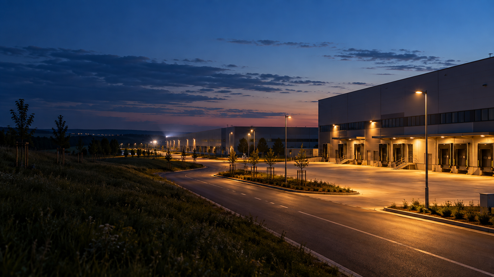

Je potřebné?
Každé svítidlo má mít jasný účel. Dekorativní nebo rezervní osvětlení nemusí běžet celou noc.
Veřejná iniciativa pro české soukromé areály
Vyzýváme provozovatele logistických, průmyslových, obchodních a sportovních areálů, aby svítili přesně tam a tehdy, kde je světlo potřeba. Sbíráme jejich přístupy, nabízíme praktické zásady a se souhlasem ukazujeme ověřenou dobrou praxi.
Bez veřejného nálepkování. Informace ověřujeme a případovou studii zveřejníme pouze se souhlasem daného subjektu.

Pět praktických otázek
Je to přesné světlo ve správném množství, čase a barvě. Zásady vycházejí z doporučení MŽP a rámce DarkSky International a Illuminating Engineering Society.
Každé svítidlo má mít jasný účel. Dekorativní nebo rezervní osvětlení nemusí běžet celou noc.
Clonění a správné naklopení drží světlo na ploše, ne v oknech, krajině nebo nad horizontem.
Volí se nejnižší úroveň, která splní bezpečnostní a pracovní požadavky daného místa.
Časové plány, zóny, stmívání a čidla omezí plný výkon v době bez pohybu.
Kde to provoz dovolí, dává smysl teplejší světlo s menším podílem krátkých vlnových délek.
Jak výzva funguje
Ptáme se provozovatelů, jak řeší směrování, dobu svícení, regulaci a spektrum.
Provozovatel může popsat současný přístup, plánovanou změnu i omezení daná bezpečností provozu.
Pokud je zájem, může následovat neveřejný rozhovor nebo malý pilot. Není to podmínka zapojení do výzvy.
Informace nejprve ověříme. Postup a výsledek zveřejníme pouze s výslovným souhlasem daného subjektu.
Pro provozovatele
Připojit se můžete stručným popisem současného řešení, připravované změny nebo otázky, kterou ve svém areálu řešíte. Fyzická návštěva ani technická inspekce nejsou podmínkou.
Pro veřejnost
Uveďte konkrétní lokalitu, dobu a to, co pozorujete. Podnět je začátkem ověřování, nikoli důkazem pochybení. Nezveřejňujeme jméno odesílatele ani neověřená obvinění.
Náš přístup
Viditelný přesah světla je důvodem k otázce, nikoli hotovým závěrem o konkrétním areálu.
Každý návrh musí zachovat požadavky práce, pohybu osob, dopravy a ochrany majetku.
Případová studie vznikne až po ověření informací a výslovném souhlasu daného subjektu.